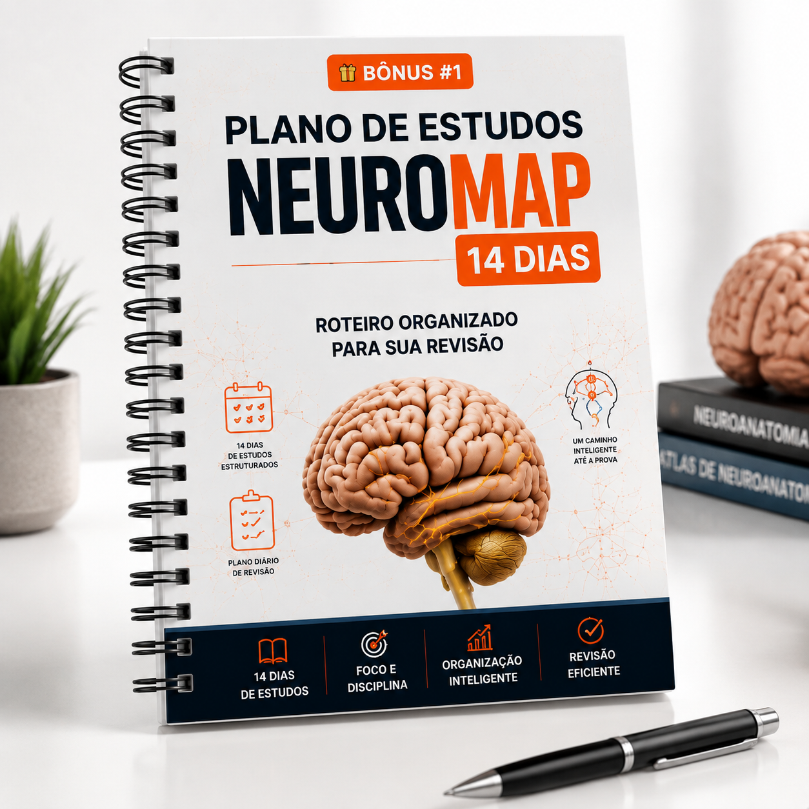
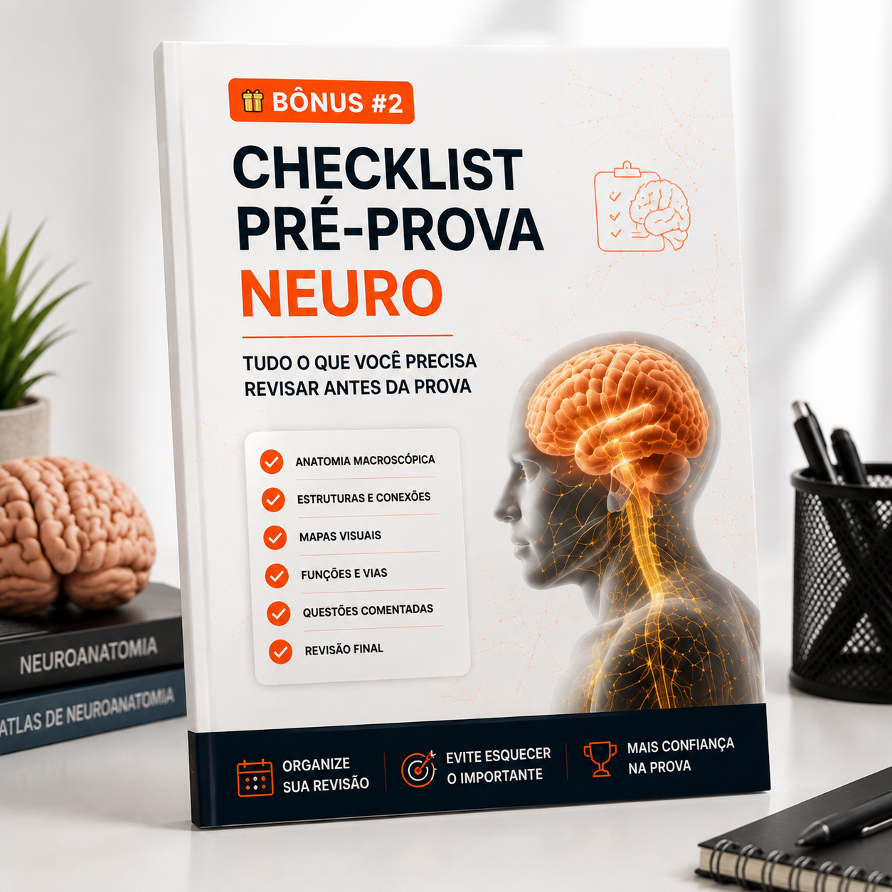

Pare de tentar memorizar Neuroanatomia do jeito mais difícil...
Tenha uma visão clara e organizada das estruturas mais importantes através de +100 mapas visuais que transformam conteúdos complexos em revisões simples.
 🧠 Quero acessar o NeuroMap agora
🧠 Quero acessar o NeuroMap agora


Veja como a Neuroanatomia fica muito mais simples quando você consegue enxergar as conexões


O NeuroMap é ideal para você que...
Tenha uma organização visual que ajuda você a conectar informações e revisar os principais pontos com mais clareza.
Veja os conteúdos organizados de forma simples, facilitando a compreensão das relações entre cada informação.
Tenha mapas prontos para consultar e relembrar os assuntos mais importantes sem precisar recomeçar seus estudos do zero.
Troque horas tentando decorar informações soltas por uma revisão visual e estratégica.
Tenha uma visão mais completa dos conteúdos estudados e reduza aquela sensação de branco na hora da prova.
Por que tantos estudantes têm dificuldade em Neuroanatomia?
- ❌ Textos enormes e cansativos
- ❌ Informações espalhadas em diferentes materiais
- ❌ Dificuldade para criar conexões
- ❌ Revisões demoradas
- ❌ Muito tempo estudando e pouca retenção
- ✅ Conteúdo organizado visualmente
- ✅ Informações reunidas em um único lugar
- ✅ Mais facilidade para entender estruturas
- ✅ Revisão rápida e objetiva
- ✅ Estudo pensado para facilitar a memorização
Conheça o Método NeuroMap Visual
O NeuroMap foi criado utilizando uma abordagem visual de aprendizagem.
Em vez de apresentar informações isoladas, ele organiza os conteúdos para que você consiga enxergar:
Porque muitas vezes o problema não é falta de estudo.
É estudar uma quantidade enorme de informações sem uma organização que facilite a compreensão.
Não é apenas um resumo de Neuroanatomia.
É uma ferramenta de revisão criada para facilitar sua rotina de estudos.
Você recebe:
Organizados para facilitar a visualização dos conteúdos.
Para você encontrar rapidamente aquilo que precisa revisar.
Para aproveitar melhor seu tempo de estudo.
Para estudar onde e quando quiser.
- Machado, A. B. M. Neuroanatomia Funcional. Editora Atheneu, 3ª ed.
- Purves, D. Neurociências. Artmed, 6ª ed.
- Haines, D. E. Neuroanatomy: An Atlas of Structures, Sections, and Systems. Wolters Kluwer.
- Fix, J. D. Neuroanatomia. Guanabara Koogan.
- Carpenter, M. B. Trato de Neuroanatomia. Guanabara Koogan.
- Mai, J. K.; Paxinos, G. The Human Nervous System. Academic Press, 3ª ed.
- Kandel, E. R. Principles of Neural Science. McGraw-Hill, 5ª ed.
- Snell, R. S. Neuroanatomia Clínica. Editora Revinter.
- Bear, M. F.; Connors, B. W.; Paradiso, M. A. Neurociências: desvendando o sistema nervoso. Artmed.
- Lent, R. Cem bilhões de neurônios? Atheneu.
🔒 Acesso imediato · Garantia de 30 dias
O NeuroMap™ é ideal para você que deseja:
Tenha um material visual para acompanhar sua preparação e suas revisões.
Se você sente dificuldade em visualizar conteúdos lendo apenas páginas e páginas, os mapas ajudam a trazer uma nova perspectiva.
Quando surgir uma dúvida durante o estudo, tenha um atlas visual para recorrer.
Se você possui vários PDFs, slides e anotações, tenha uma ferramenta complementar reunindo mapas importantes.
Facilite sua compreensão sobre regiões, vias e conexões.
Ao acessar o NeuroMap, você terá uma biblioteca visual completa de Neuroanatomia
Você recebe:
NeuroMap — Biblioteca Visual de Neuroanatomia
+100 mapas visuais organizados para ajudar você a compreender e revisar os principais conteúdos da disciplina.O que você encontra:
- ✓ Mapas visuais organizados
- ✓ Estruturas neuroanatômicas apresentadas de forma clara
- ✓ Conteúdos preparados para revisão
- ✓ Material digital de fácil acesso
- ✓ Uma nova forma de estudar Neuroanatomia
Um roteiro organizado para ajudar você a seguir uma sequência de revisão.

Uma lista prática para acompanhar os conteúdos revisados.

Perguntas rápidas para testar identificação, associação e localização.
Um guia com estratégias para aproveitar melhor mapas visuais.
Uma necessidade comum entre estudantes.
Escolha agora a melhor forma de transformar seus estudos
Pagamento único · Acesso imediato · Garantia de 30 dias
Você recebe:

- ✓ NeuroMap — Biblioteca Visual de Neuroanatomia
Você recebe:
- ✓ NeuroMap — Biblioteca Visual de Neuroanatomia
- ✓ Todos os bônus disponíveis
- ✓ Materiais extras para potencializar suas revisões
🔒 Pagamento seguro · Dados protegidos
Experimente o NeuroMap sem preocupação
Você poderá acessar o material e conhecer a metodologia visual criada para facilitar sua revisão.
Se dentro do prazo de garantia você perceber que o NeuroMap não é o que esperava, basta solicitar o reembolso.
Seu investimento estará protegido.
Começar com Garantia →Perguntas frequentes
Você não precisa estudar Neuroanatomia mais difícil.
Você precisa estudar de uma forma mais inteligente.
Milhares de informações, estruturas e conceitos podem parecer impossíveis quando estão espalhados.
Mas quando tudo está organizado visualmente, a compreensão muda.
O NeuroMap foi criado para ajudar você a revisar melhor, economizar tempo e estudar com mais clareza.
Comece agora sua nova forma de estudar Neuroanatomia.
Começe agora sua revisão visual.
🔒 Pagamento seguro · Acesso imediato · 30 dias de garantia